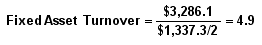
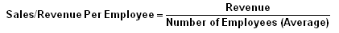
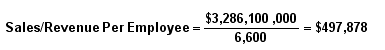
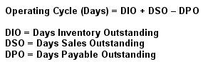

The next series of ratios we'll look at in this tutorial are the operating performance ratios.
Each of these ratios have differing inputs and measure different segments of a company's overall operational performance, but the ratios do give users insight into the company's performance and management during the period being measured.
These ratios look at how well a company turns its assets into revenue as well as how efficiently a company converts its sales into cash. Basically, these ratios look at how efficiently and effectively a company is using its resources to generate sales and increase shareholder value. In general, the better these ratios are, the better it is for shareholders.
In this section, we'll look at the fixed-asset turnover ratio and the sales/revenue per employee ratio, which look at how well the company uses its fixed assets and employees to generate sales. We will also look at the operating cycle measure, which details the company's ability to convert is inventory into cash.
To find the data used in the examples in this section, please see the Securities and Exchange Commission's website to view the 2005 Annual Statement of Zimmer Holdings.
This ratio is a rough measure of the productivity of a company's fixed assets (property, plant and equipment or PP&E) with respect to generating sales. For most companies, their investment in fixed assets represents the single largest component of their total assets. This annual turnover ratio is designed to reflect a company's efficiency in managing these significant assets. Simply put, the higher the yearly turnover rate, the better.
Formula:
Components:

As of December 31, 2005, with amounts expressed in millions, Zimmer Holdings had net sales, or revenue, of $3,286.10 (income statement) and average fixed assets, or PP&E, of $668.70 (balance sheet - the average of yearend 2004 and 2005 PP&E). By dividing, the equation gives us a fixed-asset turnover rate for FY 2005 of 4.9.
Variations:
Instead of using fixed assets, some asset-turnover ratios would use total assets. We prefer to focus on the former because, as a significant component in the balance sheet, it represents a multiplicity of management decisions on capital expenditures. Thus, this capital investment, and more importantly, its results, is a better performance indicator than that evidenced in total asset turnover.
Commentary:
There is no exact number that determines whether a company is doing a good job of generating revenue from its investment in fixed assets. This makes it important to compare the most recent ratio to both the historical levels of the company along with peer company and/or industry averages.
Before putting too much weight into this ratio, it's important to determine the type of company that you are using the ratio on because a company's investment in fixed assets is very much linked to the requirements of the industry in which it conducts its business. Fixed assets vary greatly among companies. For example, an internet company, like Google, has less of a fixed-asset base than a heavy manufacturer like Caterpillar. Obviously, the fixed-asset ratio for Google will have less relevance than that for Caterpillar.
As is the case with Zimmer Holdings, a high fixed-asset turnover ratio is more the product of a relatively low investment in PP&E, rather than a high level of sales. Companies like Zimmer Holdings are fortunate not to be capital intensive, thereby allowing them to generate a high level of sales on a relatively low base of capital investment. Manufacturers of heavy equipment and other capital goods, and natural resource companies do not enjoy this luxury.
As a gauge of personnel productivity, this indicator simply measures the amount of dollar sales, or revenue, generated per employee. The higher the dollar figure the better. Here again, labor-intensive businesses (ex. mass market retailers) will be less productive in this metric than a high-tech, high product-value manufacturer.
Formula:
 Components: 
As of December 31, 2005, Zimmer Holdings generated almost $3.3 billion in sales with an average personnel complement for the year of approximately 6,600 employees. The sales, or revenue, figure is the numerator (income statement), and the average number of employees for the year is the denominator (annual report or Form 10-K).
Variations:
An earnings per employee ratio could also be calculated using net income (as opposed to net sales) in the numerator.
Commentary:
Industry and product-line characteristics will influence this indicator of employee productivity. Tracking this dollar figure historically and comparing it to peer-group companies will make this quantitative dollar amount more meaningful in an analytical sense.
For example, Zimmer Holdings' sales per employee figure of $497,878 for its 2005 fiscal year compares very favorably to the figure for two of its direct competitors - Biomet, Inc. (NYSE:BMET) and Stryker Corp. (NYSE:SYK). For their 2005 fiscal years, these companies had sales per employee figures of only $320,215 and $293,883, respectively.
The comparison of Microsoft (Nasdaq:MSFT) and Wal-Mart (WMT), two businesses in very different industries, illustrates how the sales per employee ratio can differ because of this circumstance. Microsoft relies on technology and brain power to drive its revenues, and needs a relatively small personnel complement to accomplish this. On the other hand, a mega-retailer like Wal-Mart is a very labor-intensive operation requiring a large number of employees. These companies' respective sales per employee ratios in 2005 were $670,939 and $172,470, which clearly reflect their industry differences when it comes to personnel requirements.
The sales per employee metric can be a good measure of personnel productivity, with its greatest use being the comparison of industry competitors and the historical performance of the company.
Expressed as an indicator (days) of management performance efficiency, the operating cycle is a "twin" of the cash conversion cycle. While the parts are the same - receivables, inventory and payables - in the operating cycle, they are analyzed from the perspective of how well the company is managing these critical operational capital assets, as opposed to their impact on cash.
Formula:
 Components:
DIO is computed by:
| (1) cost of sales per day | 739.4 ÷ 365 = 2.0 |
| (2) average inventory 2005 | 536.0 + 583.7 = 1,119.7 ÷ 2 = 559.9 |
| (3) days inventory outstanding | 559.9 ÷ 2.0 = 279.9 |
DSO
is computed by:
| (1) net sales per day | 3,286.1 ÷ 365 = 9.0 |
| (2) average accounts receivable | 524.8 + 524.2 = 1,049 ÷ 2 = 524.5 |
| (3) days sales outstanding | 524.5 ÷ 9.0 = 58.3 |
| (1) cost of sales per day | 739.4 ÷ 365 =2.0 |
| (2) average accounts payable | 131.6 + 123.6 = 255.2 ÷ 125.6 |
| (3) days payable outstanding | 125.6 ÷ 2.0 = 63 |
Computing OC
Zimmer Holdings' operating cycle (OC) for FY 2005 would be computed with these numbers (rounded):
| DIO | 280 |
| DSO | +58 |
| DPO | -63 |
| OC | 275 |
Variations:
Often the components of the operating cycle - DIO, DSO and DPO - are expressed in terms of turnover as a times (x) factor. For example, in the case of Zimmer Holdings, its days inventory outstanding of 280 days would be expressed as turning over 1.3x annually (365 days ÷ 280 days = 1.3 times). However, it appears that the use of actually counting days is more literal and easier to understand.
Commentary:
As we mentioned in its definition, the operating cycle has the same makeup as the cash conversion cycle. Management efficiency is the focus of the operating cycle, while cash flow is the focus of the cash conversion cycle.
To illustrate this difference in perspective, let's use a narrow, simplistic comparison of Zimmer Holdings' operating cycle to that of a competitive peer company, Biomet. Obviously, we would want more background information and a longer review period, but for the sake of this discussion, we'll assume the FY 2005 numbers we have to work with are representative for both companies and their industry.
| Days Sales Outstanding (DSO): | |
| Zimmer | 58 Days |
| Biomet | 105 Days |
| Days Inventory Outstanding (DIO): | |
| Zimmer | 280 Days |
| Biomet | 294 Days |
| Days Payable Outstanding (DPO): | |
| Zimmer | 63 Days |
| Biomet | 145 Days |
| Operating Cycle: | |
| Zimmer | 275 Days |
| Biomet | 254 Days |
When it comes to collecting on its receivables, it appears from the DSO numbers, that Zimmer Holdings is much more operationally efficient than Biomet. Common sense tells us that the longer a company has money out there on the street (uncollected), the more risk it is taking. Is Biomet remiss in not having tighter control of its collection of receivables? Or could it be trying to pick up market share through easier payment terms to its customers? This would please the sales manager, but the CFO would certainly be happier with a faster collection time.
Zimmer Holdings and Biomet have almost identical days inventory outstanding. For most companies, their DIO periods are, typically, considerably shorter than the almost 10-month periods evidenced here. Our assumption is that this circumstance does not imply poor inventory management but rather reflects product line and industry characteristics. Both companies may be obliged to carry large, high-value inventories in order to satisfy customer requirements.
Biomet has a huge advantage in the DPO category. It is stretching out its payments to suppliers way beyond what Zimmer is able to do. The reasons for this highly beneficial circumstance (being able to use other people's money) would be interesting to know. Questions you should be asking include: Does this indicate that the credit reputation of Biomet is that much better than that of Zimmer? Why doesn't Zimmer enjoy similar terms?
Shorter Is Better?
In summary, one would assume that "shorter is better" when analyzing a company's cash conversion cycle or its operating cycle. While this is certainly true in the case of the former, it isn't necessarily true for the latter. There are numerous variables attached to the management of receivables, inventory and payables that require a variety of decisions as to what's best for the business.
For example, strict (short) payment terms might restrict sales. Minimal inventory levels might mean that a company cannot fulfill orders on a timely basis, resulting in lost sales. Thus, it would appear that if a company is experiencing solid sales growth and reasonable profits, its operating cycle components should reflect a high degree of historical consistency.
Proceed to the next chapter on Cash Flow Indicator Ratios here.
Or, click here to return to the Financial Ratio Tutorial main menu.
{kind=link}
{kind=link}
{kind=link}
{kind=link}
{kind=link}